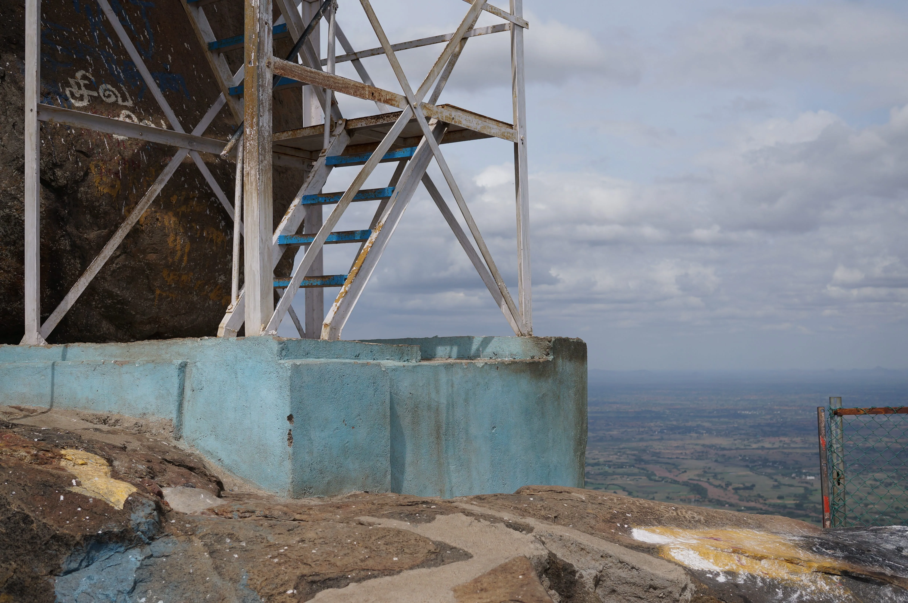
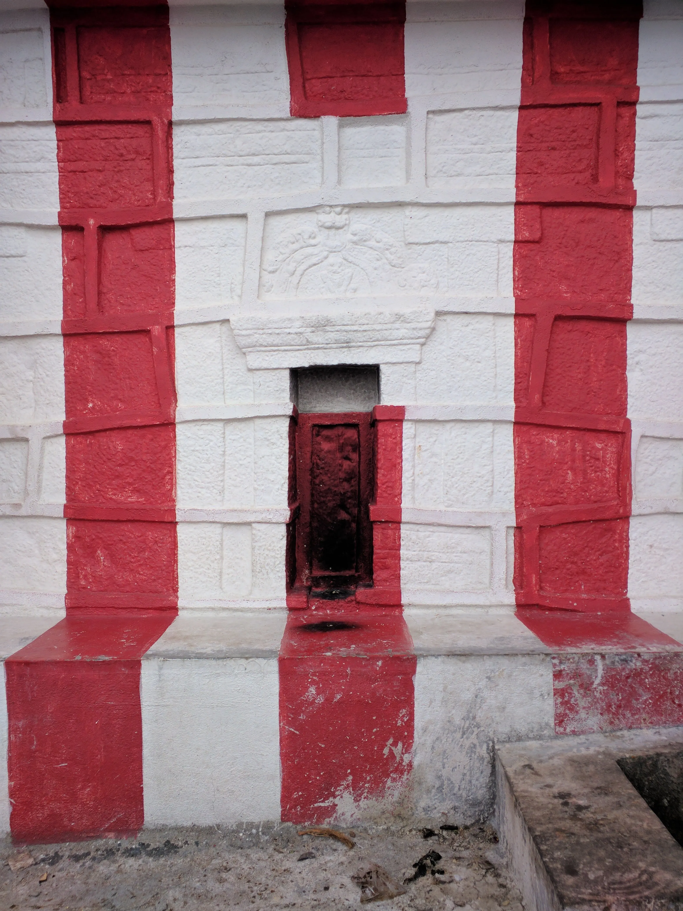
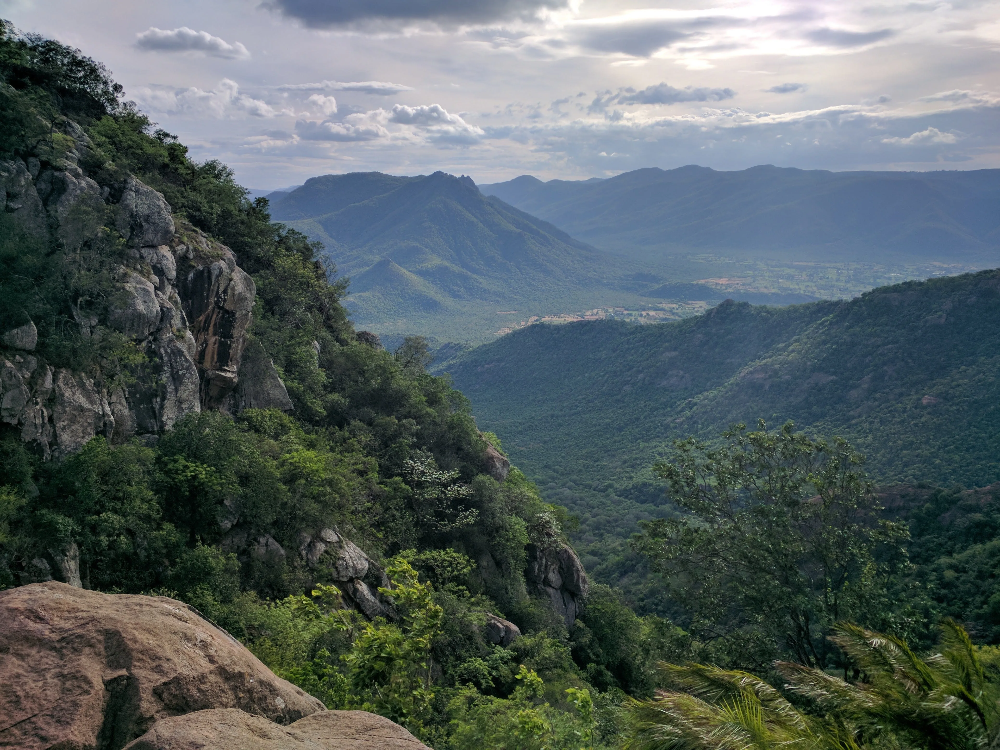
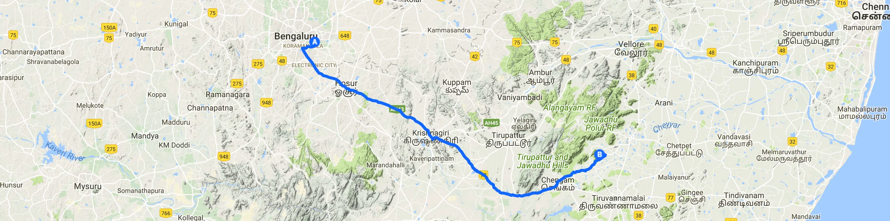
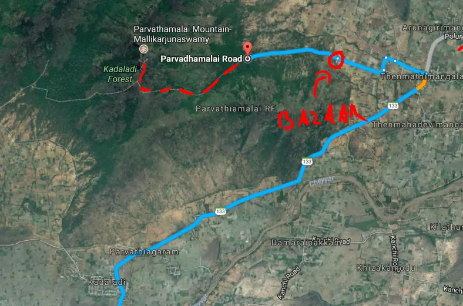
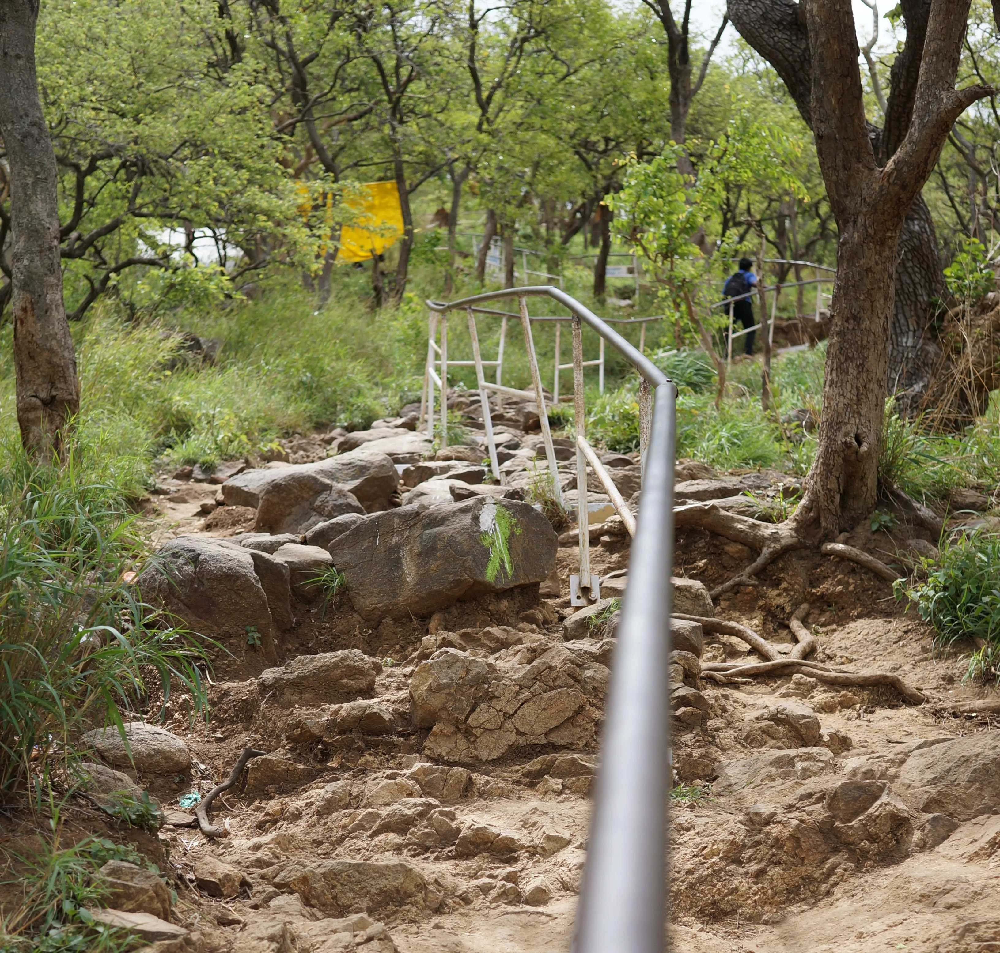
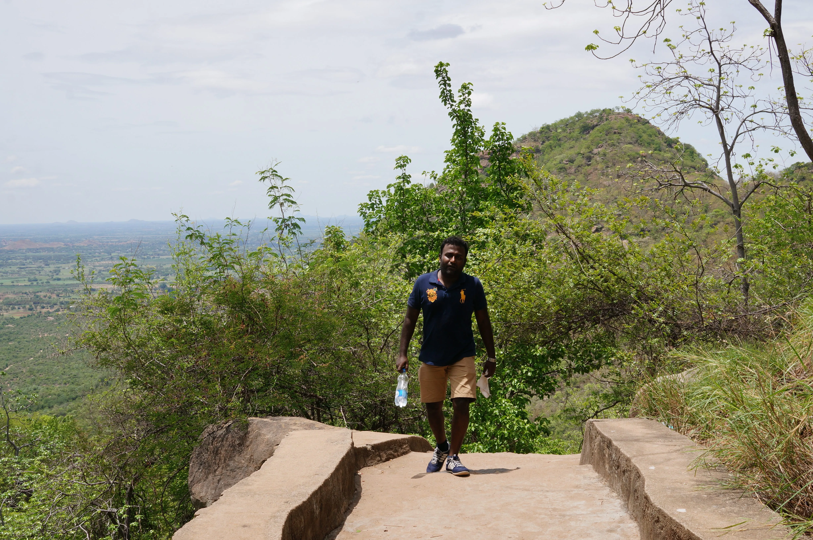
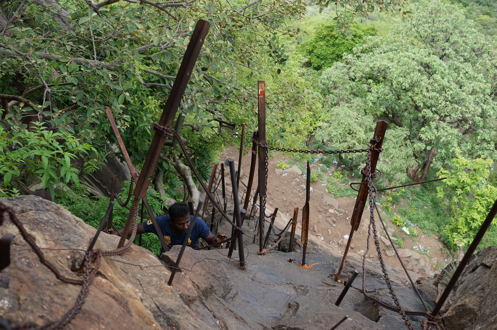
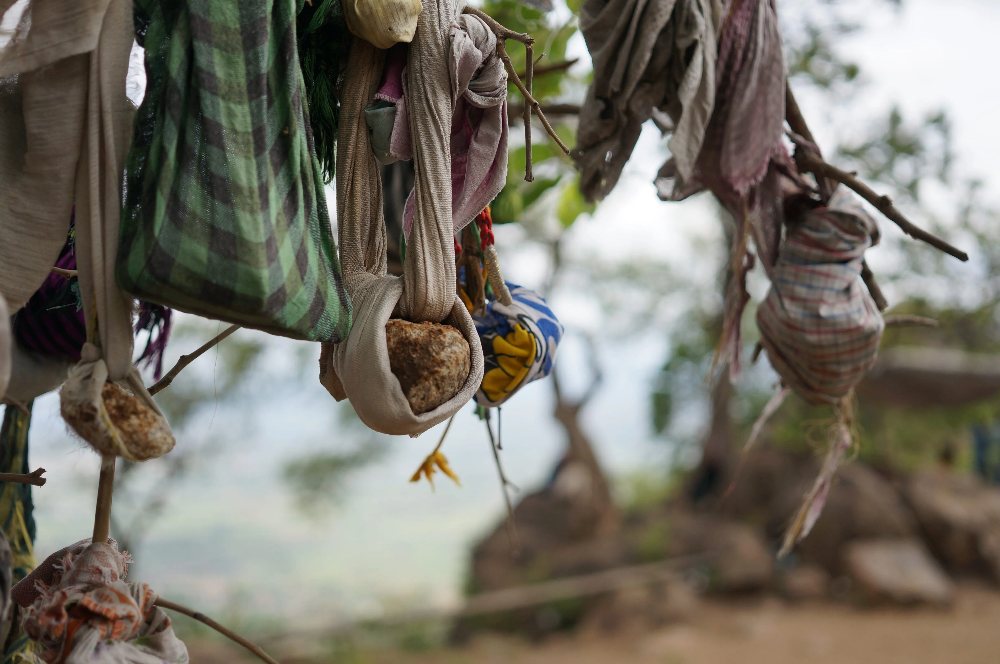

It was a weekend in early July when I took my colleague Manoj up on his offer to take me to climb Parvathamalai, an imposing peak with an ancient temple on top, a challenging climb and a wonderful legend.
Why is this place so special?
Parvathamalai has most everything I'm looking for in an ideal adventure. A physically challenging climb, breathtaking views and interesting historical and cultural connotations. Let's start with the last one. One of the famous legends of the ancient Hindu epic the Ramayana is the story about Hanuman the monkey general carrying a piece of the Himalayas to Sri Lanka.
Rama's wife Sita has been kidnapped by Ravana and taken to Sri Lanka and once Rama and his brother Lakshman go to rescue her with the help of the monkeys and bears Lakshman is fatally wounded. Rama sends Hanuman to gather a herb that only grows on Sanjeevani hill in the Himalayas. Hanuman is very fast and strong, but he is not the sharpest tool in the shed and he forgets which herb to bring. So he decides to take the entire mountain down to Sri Lanka. An awesome story.
So how is Parvathamalai connected to this epic tale? Legend says it that when Hanuman was carrying Sanjeevani hill down to the south he dropped a small part of it and it became Parvathamalai. I love this story, it makes this place quite special indeed. And it does correspond with real world facts. The hill is host to an unusually high concentration of more than 100 healing herbs, something not applicable to the region at all.

When it comes to history, there are apparently written records of a local ruler worshiping on the top of the mountain in as early as 300 AD. Consensus generally dates the temple on the hilltop to be around 2000 years old. The temple - as most in India - is in frequent use and thus there are layers and layers of newer sections added to the original sanctum. The idol inside is said to have an optical illusion, when the devotee is backing away from it its size seems to increase rather than becoming smaller. Smoke was too much in the sanctum so I could not test this myself. There is a modern ashram on the temple hill as well, it is not noteworthy at all.

There are quite a few customs associated with the temple as well. According to the Regional History (Sthalapuranam), the devotee reaps the benefit of visiting all the Shiva temples on earth, once one visits this Parvathamalai temple. And a one day pooja performed by the devotee in the temple is considered equal to the pujas he/she would be performing all the 365 days in a year. Quite convenient I have to say.
Busy days are those with a full moon. These days droves of pilgrims descend on the mountain. The best time to visit is right after a day like this. This will ensure that small shops along the climb are still open but there are far less people on the trails.
There is also a tree near where the tough climb begins where people come who want a child but for some reason it is not happening for them. They leave a stone strung up on the tree in a sort of makeshift swathing, like for a baby. Quite a haunting scene. No wonder there are widespread reports of people witnessing encountering ghosts and spirits when spending the night on the top.

The route to Parvathamalai
This trip is doable in one day, but one has to be in great physical condition to be able to do it before the day runs out. We met up at 5 AM in the morning near Yemlur bridge near Bellandur late, so on the side of Bangalore where we'd need to leave the city from, giving us a bit of an advantage. Turning onto the highway towards Hosur at the Silk Board was uneventful early in the morning. All the way to Krishnagiri there is an excellent 4 lane highway with a McDonalds and Cafe Coffee Day at Schoolagiri, a favorite breakfast stop for travelers. The overall distance is about 400 kilometers there and back. Quite a drive on a bike.
After Krishnagiri turning onto route 77 through Chengam and to the final destination holds quite a few surprises. And not in a good way. Manoj told me the reason for perfectly good highway and back breaking dirt roads following each other in rapid succession is due to the road building project being terminated half way due to a change in local government. This means however that it is quite a tiring section to ride, especially during the night. The ride to the mountain from Bangalore takes about 5 hours and the same time getting back. So getting up early is of utmost importance.

On the final stretches after leaving Kadalai village behind put Veerabadhrar Temple into your GPS, that is the last place you can park your bikes at. There is a small bazaar a bit earlier on the road and if you came by car you'll have to leave it here since the road forward is more like a paved pathway. We reached the temple at around noon, a bit late for our liking.

Now was the time to start walking and eventually climbing. It is important to have enough water with you. Bring along at least 2–3 liters for each member of the group. If you go after a full moon night, shops along the trail will mostly be open but otherwise don't count on any food or drink being available while you climb. If you want to perform a puja in the temple, you'll also have to bring all the necessities and perform it yourself since the temples has no priest. Also pack a torch and a power bank for your phone. There is no data connection on most of the hill, but it is always good to have a charged phone for emergencies.
The climb
The temple is on the top of the hill which is 3000 feet (914 meters) high. Considering that the hill is located on the edge of the Eastern Ghats and its base is around sea level, not like the hills on the Deccan Plateau it means quite a climb. So not only will you have to climb almost 900 meters vertically, you'll have to do this in the heat of Tamil Nadu.

The first part of the trail is well built stairs, hundreds of them. Even though it is virtually just a long staircase it is quite challenging due to it creeping upwards at every turn. The man made stairs eventually turn into natural stairs made up of large stones with a steep climb making it more challenging. Eventually the route meets up with the one coming up from the other side and there for the next steep section made up of mostly dirt and loose soil is reinforced with a central railing making the climb a bit easier. At least you can use your upper body to climb as well.

After a small plateau where the mysterious child bearing tree stands starts the via ferrata section, the highlight of the climb. The route is split to two, one going up and one going down. I would say the way up is more challenging while the way down is scarier due to the drops below your feet. This is not for the faint of heart, if you have vertigo or below average stamina I would reconsider visiting this destination to begin with.

After the via ferrata section you will arrive at the ancient fortifications that guarded the temple on the top of the mountain. Stunning ancient masonry is mixed with modern structures like this staircase that is part of the way down.

On the top you are greeted with the ashram, a small shop (if it is open), tons of monkeys, breathtaking views and of course the ancient temple. After Manoj performed a puja (remember, it is worth 365 day's worth) we ate some biscuits, some of which were stolen by monkeys right out of my hands. Do be careful with these buggers. We started our descent around 4PM, way too late sadly. The climb up took 4 hours, a reasonable amount but quite more than we calculated with. This meant the sun was started to go down by the time we got back to the bazaar with our bikes. We bought some small souvenirs. Now you know I loathe souvenirs but even I couldn't say no to some glorious Hanuman stickers for a mere 15 rupees and a tiny picture showing the mountain and the idols of the temple for 50 rupees. Charmingly simple little reminders, souvenirs done right I would say.
We were running out of time fast. Darkness was approaching and we had the treacherous number 77 road ahead of us until Krishnagiri. We did take a wrong turn once in the dark and I fell into a deep pothole with my bike where I was sure I will fall but then managed to get out of it without more than some adrenaline boost. 10 years of experience riding bikes does prepare you for things like this. If you're less experienced though I would recommend avoiding this section of the road at night at all costs. We stopped at a shady roadside place for dinner somewhere along the way. Had fried rice, boneless (!) chicken kebab with a naan and soft drinks all for 200 rupees, phenomenal value. After we reached Krishnagiri the drive back on the highway was a breeze.
This was an awesome one day trip for sure. I am grateful to Manoj for taking me along, sharing the stories of the mountain and conquering it with me. I'd suggest this outing from Bangalore if you are physically fit and don't mind getting up early for a long drive. Alternatively, if you can get a car with a driver you can take your time and sleep on the way back at night.
More pictures from the outing
Here are some more pictures from the outing: